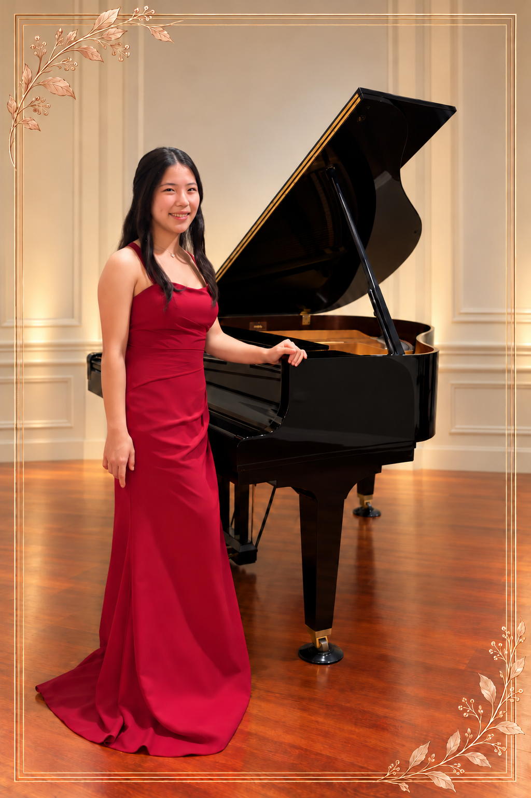

ABOUT
C H A R A C T E R

I started piano in 2016, and it is the thing I have worked hardest at. It also led me to the rest of what I do.
Through Music Angels Hands I organize concerts, edit a student newspaper, and perform for seniors and hospital patients.
I want to keep improving at the piano and keep using it to help people.